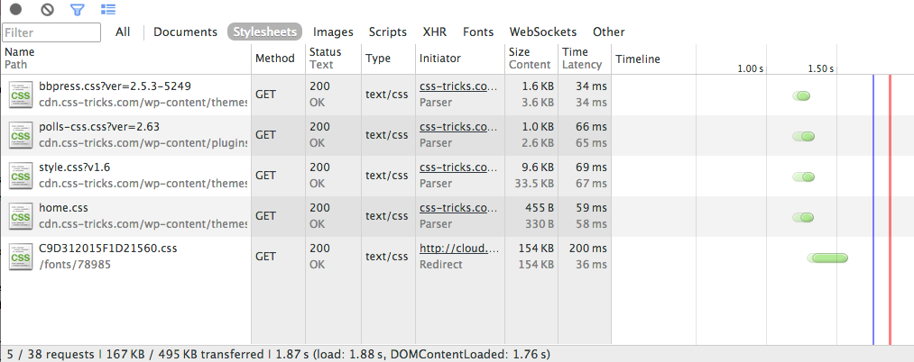
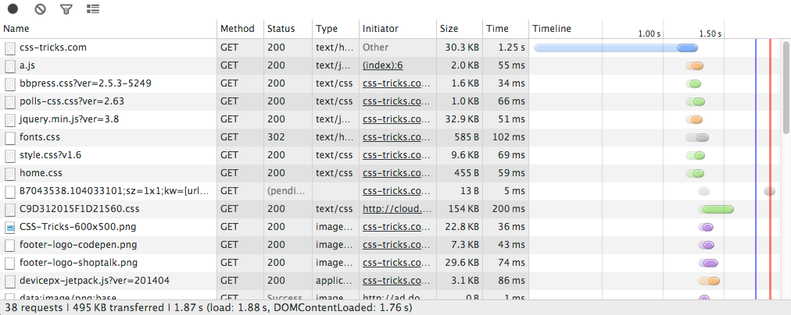
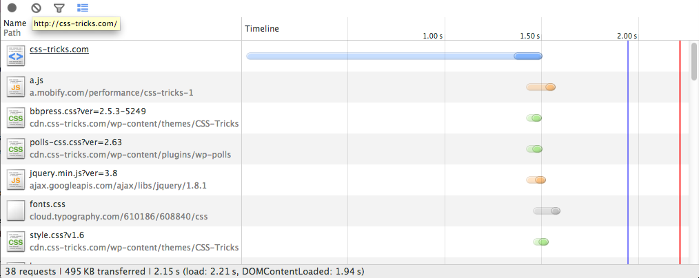
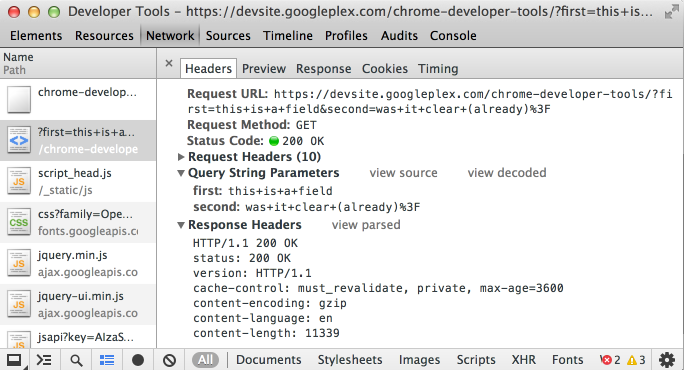

The Network panel records information about each network operation in your application, including detailed timing data, HTTP request and response headers, cookies, WebSocket data, and more. The Network panel helps you answer questions about the network performance of your web application, such as:
The Network panel uses the Resource Timing API, a JavaScript API that provides detailed network timing data for each loaded resource. For example, the API can tell you precisely when the HTTP request for an image started, and when the image's final byte was received. The following illustration shows the network timing data points that the Resource Timing API provides.
The API is available to any web page, not just DevTools. In Chrome, it's exposed as methods on the global window.performance object. The performance.getEntries() method returns an array of "resource timing objects", one for each requested resource on the page.
Try this: open the JavaScript console on the current page, enter the following at the prompt, and hit Return:
window.performance.getEntries()[0]
This evaluates the first element in the array of resource timing objects and displays its properties in the console, as shown below.

Each timestamp is in microseconds, following the High Resolution
Time specification. This API is available in
Chrome as the window.performance.now() method.
The Network panel automatically records all network activity while DevTools is open. The first time you open the panel it may be empty. Reload the page to start recording, or simply wait for network activity to occur in your application.

Each requested resource is added as a row to the Network table, which contains the columns listed below. Note the following about the Network table:
| Field | Description |
|---|---|
| Name and Path | The name and URL path of the resource, respectively. |
| Method | The HTTP method used for the request (GET or POST, for example). |
| Status and Text | The HTTP status code and text message, respectively. |
| Domain | The domain of the resource request. |
| Type | The MIME type of the requested resource. |
| Initiator | The object or process that initiated the request. It can have one of the following values:
|
| Cookies | The number of cookies transferred in the request. These correspond to the cookies shown in the Cookies tab when viewing details for a given resource. |
| Set-Cookies | The number of cookies set in the HTTP request. |
| Size and Content | Size is the combined size of the response headers (usually a few hundred bytes) plus the response body, as delivered by the server. Content is the size of the resource's decoded content. If the resource was loaded from the browser's cache rather than over the network, this field will contain the text (from cache). |
| Time and Latency | Time is total duration, from the start of the request to the receipt of the final byte in the response. Latency is the time to load the first byte in the response. |
| Timeline | The Timeline column displays a timeline view of all network requests. Clicking the header of this column reveals a menu of additional sorting fields. See Timeline view and Sorting and filtering for details. |
By default, the current network record log is discarded when you navigate to another page, or reload the current page. To preserve the recording log in these scenarios, click the black Preserve log upon navigation button  at the bottom of the Network panel; new records are appended to the bottom of the table. Click the same button again (now red
at the bottom of the Network panel; new records are appended to the bottom of the table. Click the same button again (now red  ) to disable log preservation.
) to disable log preservation.
By default, resources in the Network table are sorted by the start time of each request (the network "waterfall"). You can sort the table by another column value by clicking the column header. Click the header again to change the sort order (ascending or descending).

The Timeline column is unique from the others in that, when clicked, it displays a menu of additional sort fields.

The menu contains the following sorting options:
To filter the Network table to only show certain types of resources, click one of the content types along the bottom of the panel: Documents, Stylesheets, Images, Scripts, XHR, Fonts, WebSockets, and Other. In the following screenshot only CSS resources are shown. To view all content types, click the All filter button.

You can change the default set of columns displayed by the Network table. To show or hide a column, Right+click or Control+click (Mac only) in the table header and select or deselect column names from the list.

You can view the Network table with large resource rows (the default), or small resource rows. Click the blue Use small resource rows toggle button  at the bottom of the panel to view small rows. Click the same button (now gray ) to view large resource rows again. Large rows enable some columns to display two text fields: a primary field and a secondary field (Time and Latency, for instance). When viewing small rows only the primary field is displayed.
at the bottom of the panel to view small rows. Click the same button (now gray ) to view large resource rows again. Large rows enable some columns to display two text fields: a primary field and a secondary field (Time and Latency, for instance). When viewing small rows only the primary field is displayed.
In the following screenshot, the Network table is viewed with small resource rows and just the Timeline column.

The Timeline view in the Network panel graphs the time it took to load each resource, from the start of the HTTP request to the receipt of the final byte of the response. Each resource loading time is represented as a bar, color-coded according to the resource type. The length of the lighter-shaded part of each bar represents the request's latency, while the length of the darker-shaded part represents the time spent receiving the response data.

When you hover your mouse over a timeline row (but not over an actual bar) the request's latency and receipt time are displayed above the corresponding bar's light- and dark-shaded areas, respectively, as shown below.

If you hover your mouse over the timeline bar itself, the complete timing data for the resource is presented in a pop-up. This is the same information that's presented in the Timing details tab for a given resource.

The timeline indicates when the the DOMContentLoaded
and load events were fired with blue and red vertical lines, respectively. The DOMContentLoaded event is fired when the main document had been loaded and parsed. The load event is fired when all of the page's resources have been downloaded.

Timeline bars are color-coded as follows:
| Documents | |
| Stylesheets | |
| Images | |
| Scripts | |
| XHR | |
| Fonts | |
| Other |
Right+clicking or Control+clicking (Mac only) within the Network table a context menu appears with several actions. Some of these actions apply to the resource row under the mouse click (like copying HTTP request headers), while others apply to the entire network recording (such as saving a Network recording as a HAR file).

The following menu actions apply to the selected resource:
cURL is a command line tool for making HTTP transactions. The Network panel's Copy as cURL command recreates an HTTP request (including HTTP headers, SSL certificates, and query string parameters) and copies it as a cURL command string to the clipboard. You can then paste the string into a terminal window (on a system with cURL) to execute the same request.
Below is an example cURL command line string taken from a XHR request on the Google News home page.
curl 'http://news.google.com/news/xhrd=us' -H 'Accept-Encoding: gzip,deflate,:sdch' -H 'Host: news.google.com' -H 'Accept-Language: en-US,en;q=0.8' -H 'User-Agent: Mozilla/5.0 (Macintosh; Intel Mac OS X 10_8_3) AppleWebKit/537.36 (KHTML, like Gecko) Chrome/29.0.1510.0 Safari/537.36' -H 'Accept: */*' -H 'Referer: http://news.google.com/nwshp?hl=en&tab=wn' -H 'Cookie: NID=67=eruHSUtoIQA-HldQn7U7G5meGuvZOcY32ixQktdgU1qSz7StUDIjC_Knit2xEcWRa-e8CuvmADminmn6h2_IRpk9rWgWMdRj4np3-DM_ssgfeshItriiKsiEXJVfra4n; PREF=ID=a38f960566524d92:U=af866b8c07132db6:FF=0:TM=1369068317:LM=1369068321:S=vVkfXySFmOcAom1K' -H 'Connection: keep-alive' --compressed
You can save the data from a network recording as a HAR (HTTP Archive) file, or copy the records as a HAR data structure to your clipboard. A HAR file contains a JSON data structure that describes the network "waterfall". Several third-party tools can reconstruct the network waterfall from the data in the HAR file.
To save a recording:
For more information, Web Performance Power Tool: HTTP Archive (HAR).
When you click a resource name in the Network table a tabbed window appears that contains the following additional details:
The Headers tab displays the resource's request URL, HTTP method, and response status code. Additionally, it lists the HTTP response and request headers and their values, and any query string parameters. You can view HTTP headers parsed and formatted, or in their source form by clicking the View parsed/View source toggle button, respectively, located next to each header's section. You can also view parameter values in their decoded or URL encoded forms by clicking the View decoded/View URL encoded toggle button next to each query string section.

You can also copy request and response headers to your clipboard.
The Preview tab displays a preview of the resource, when available. Previews are currently displayed for image and JSON resources, as shown below.


You can view the resource's unformatted response on the Response tab.
The Response tab contains the resource's unformatted content. Below is a screenshot of a JSON data structure that was returned as the response for a request.

You can also view formatted previews of some resource types, including JSON data structures and images.
The Cookies tab displays a table of all the cookies transmitted in the resource's HTTP request and response headers. You can also clear all cookies.

The Cookies table contain the following columns:
| Property | Description |
|---|---|
| Name | The cookie's name. |
| Value | The cookie's value. |
| Domain | The cookie's domain. |
| Path | The cookie's URL path. |
| Expires / Max-Age | The value of the cookie's expires or max-age properties. |
| Size | The size of the cookie in bytes. |
| HTTP | This indicates that the cookie should only be set by the browser in the HTTP request, and cannot be accessed with JavaScript. |
| Secure | The presence of this attribute indicates that the cookie should only be transmitted over a secure connection. |
The Frames tab shows messages sent or received over a WebSocket connection. This tab is only visible when the selected resource initiated a WebSocket connection. The table contains the following columns:
| Name | Description |
|---|---|
| Data | The message payload. If the message is plain text, it's displayed here. For binary opcodes, this field displays the opcode's name and code. The following opcodes are supported:
|
| Length | The length of the message payload in bytes. |
| Time | The time stamp when the message was created. |
Messages are color-coded according to their type. Outgoing text messages are color-coded light-green; incoming text messages are white:

WebSocket opcodes are light-yellow:

Errors are light-red.
Notes about current implementation:
The Timing tab graphs the time spent on the various network phases involved loading the resource. This is the same data displayed when you hover over a resource bar in the Timeline view.

The table below lists the network phases shown in the Timing tab and their descriptions.
| Property | Description |
|---|---|
| Proxy | Time spent negotiating with a proxy server connection. |
| DNS Lookup | Time spent performing the DNS lookup. You want to minimize DNS look ups. |
| Blocking | Time the request spent waiting for an already established connection to become available for re-use. |
| Connecting | Time it took to establish a connection, including TCP handshakes/retries, DNS lookup, and time connecting to a proxy or negotiating a secure-socket layer (SSL). |
| Sending | Time spent sending the request. |
| Waiting | Time spent waiting for the initial response. |
| Receiving | Time spent receiving the response data. |
To learn more optimizing the network performance of your application, see the following resources: